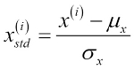

Data Preprocessing Notes
Ahmad Faiz
Removing data on Nan
df.dropna(axis=0) drop rows with nulls
df.dropna(axis=1) drop columns with nulls
df.dropna(thresh=k) drop rows with nulls > k
df.dropna(subset=[k]) drop rows by checking for nulls only in column k
df.dropna(how='all') drop rows with all nulls
df.dropna() defaults to axis=0(drop rows)
Imputing data on Nan
Using sklearn transformer Imputer
Imputer parameters: strategy=mean/median/most_frequent; axis=0(along columns)/1(along rows); missing_values='NaN'
from sklearn.preprocessing import Imputer
imp = Imputer(strategy='mean', axis=0, missing_values='NaN')
X_train_imp = imp.fit_transform(X_train)
Handling categorical features
Mapping Ordinal Features: Use df['ordinal_column'].map(map_dict) to map categorical
values to defined values relation of ordinal variable
Mapping Class Labels:Use pandas map() or sklearn transformer LabelEncoder
Eg LabelEncoder().fit_transform(df['class_labels'].values)
OneHotEncoding: To prevent false ordering between nominal features implement OneHotEncoding to create dummified variables for each value of the mapped nominal variable value.
Use sklearn LabelEncoder first on the nominal variable followed by OneHotEncoder fit_transform.
Alternatively use pandas.get_dummies()
Example
OneHotEncoder(categorical_features=[0]).fit_transform(df.columns[:-1].values)
pd.get_dummies(df[df.columns[:-1]]) to dummify all string variables leaving all numeric intact
pd.get_dummies(df[df.columns[:-1]], drop_first=True) to reduce correlation among dummified variables by dropping one feature value as (0,0) for other two is the same thing
Feature scaling
Decision trees are an exception to feature scaling, as we do axis aligned splits using KD Trees.
However for other algorithms(both parametric and non-parametric) if the position of data point in the feature space is of importance then feature scalign becomes cruial.
Two common approcahes are Normalization and Standardization
Normalization refers to min-max scaling which is

sklearn implementation needs a MinMaxScaler transformer
from sklearn.preprocessing import MinMaxScaler
min_max_sclr = MinMaxScaler()
X_train_norm = min_max_sclr.fit_transform(X_train)
X_test_norm = min_max_sclr.transform(X_test)
Standardization commonly implies taking mean standardization which is

sklearn implementation needs a StandardScaler transformer
from sklearn.preprocessing import StandardScaler
ssc = StandardScaler()
X_train_std = ssc.fit_transform(X_train)
X_test_std = ssc.transform(X_test)
Usually standardization with mean centered at zero is better to learn weights tending towards zero as well.Also using standardization makes the data less sensitive to outliers and
also incorporates information about these outliers in train
Train Test Split
Can use sklearn model selection function train_test_split(from sklearn.model_selection import train_test_split)
parameters: train_test_split(X, Y, test_size, stratify, random_state)
test_size: test_split size; stratify=Y(class labels): to ensure that proportion of labels in train and test is same
from sklearn.model_selection import train_test_split
X_train, X_test, Y_train, Y_test = train_test_split(X, Y, test_size=0.3, stratify=Y, random_state=1)
Selecting important features
This is important particularly in case of high variance(overfitting). One way to address variance is to reduce data dimensionality.
Basically there are two main ways to reduce data dimensionality: Feature Selection and Feature Extraction
•Feature selection refers to selecting a subset of features based on their importance in describing the test dataset. Methods which can be used are
Regularization parameter variation for a paramteric model(eg Logistic Regression) and then plotting the weight coeffiecient distribution over features with increasing value of reg parameter
Random Forest which tells the feature importance based on the contribution in reducing the impurity after the split. sklearn has a nice abstraction for getting feature importance .feature_importances_
L1 regularizer
L2

Geometrically the optimization function is now bounded in the space defined by the L1(diamond) or L2(sphere). Since these are centered at origin
the optimization function makes a compromize on the gradient contour by digging into the hill limited by the regularizer. Increasing or decreasing the reg parameter(lambda) increases/decreases the radius of these restrictive spaces as the
optimization is more focused on minimizing the second term of the ERM equation. Hence model fit can be iterated with different values of reg parameter which will result in different weights assigned. This can now be plotted to see which feature contribute
to maximum weights on varying reg parameter. Example using Logistic regression
for c in np.arange(-4., 6.)
LogisticRegression(penalty='L1', C=10**c)

Random Forest for feature imprtance based on features which resulted in maximum loss of impurity in the dataset. In RF feature selection there is no assumption of linear decision boundary.
This measurement implies that features which result in average maximum decrease of impurity across all trees are ranked higher in terms of them alone explaining the train dataset.
scikit implementation
from sklearn.ensemble import RandomForestClassifier
rf = RandomForestClassifier(criterion='entropy', n_estimators=1000, n_jobs=4)
rf.fit(X_train)
rf.feature_importances_
sample plot for UCI wine

•Feature Extraction implies taking the original dimensions and then projecting them to some lower dimension space to reduce dimensionality and also can be used for decision boundary viz purpose.
PCA is one instance of feature extraction where the data is projected onto lower dimension space with the axes of this space being featues which explain the maximum variance for the class labels.
scikit implementation requires using a transformer PCA. After transformation use this dim space to train the model estimator
from sklearn.model_decomposition import PCA
pca = PCA(n_components=2)
X_train_pca = pca.fit_transform(X_train)
X_test_pca = pca.transform(X_test)